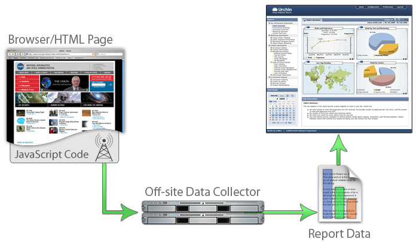

Urchin 流量監視器 (UTM) 的運作方式為何？
總覽
正在申請專利中的 Urchin 流量監視器 (UTM) 原本是 Urchin 4 提供的其中一項功能，但現在它經過特別設計，以便提供您對於特定網站訪客最精確的評估。對於為了業務需求需要深入瞭解線上訪客行為的您來說，Urchin 流量監視器是不可或缺的技術，不但可結合最佳的客戶和伺服器端資料，同時讓您掌控這些資料。這項技術不但安裝容易，而且可讓商務使用者明確地識別特定訪客和點擊路徑、傳回包含首次來訪訪客和舊訪客的忠誠度指標，以及他們的使用頻率。Urchin 流量監視器的最新版本提供了更強大的廣告系統追蹤功能。
Urchin 流量監視器系統中有兩個元件：一是 Urchin 流量監視器感應器，也就是安裝在網站內容中的程式碼片段，另一個則是 Urchin 流量監視器引擎，是處理記錄之 Urchin 引擎的一部分。Urchin 流量監視器感應器支援客戶端資料收集功能，並為每個網頁檢視將資料傳回 Urchin。Urchin 流量監視器引擎會在用戶端資訊中結合現有的伺服器端資料，以提供更精確而完整的網站活動資料。
Urchin 流量監視器感應器是小型的 JavaScript 程式碼，可完成兩個重要的功能。第一，此感應器會強制每個網頁檢視中至少一次的點擊前進至 Google 網頁伺服器，以取消快取的功能。第二則是 Urchin 流量監視器感應器可使用客戶端的「第一方」Cookie 並獨立識別出每個訪客，以追蹤首次來訪的訪客及舊訪客。這個 Cookie 識別碼是一種通訊標記，只有和工作階段 ID 同方向的網頁伺服器才能檢視。它不是會在系統外部傳送資訊的第三方 Cookie，因此不會違反任何隱私權政策。
Urchin 流量監視器系統運作方式如下。網頁伺服器提供兩種基本功能：內容傳送和記錄。網站內容中包含傳送至使用者瀏覽器的 Urchin 流量監視器感應器。此 Urchin 流量監視器感應器會設定特殊識別碼，並將額外的要求傳送給同一個網頁伺服器。Urchin 流量監視器引擎則是 Urchin 記錄處理引擎的一部分，它會使用此要求中的資料以提供精確而更為完整的訪客行為說明。
Urchin 流量監視器感應器
Urchin 流量監視器感應器可取消快取和 Proxy 功能，並提高記錄檔資料的精確度和完整性。例如，當使用者回到上一個檢視頁面時，此頁面的內容會從瀏覽器的快取記錄體進行傳送。如果快取是由服務供應商所提供的話，就會套用相同的模式。網頁伺服器本身並沒有此網頁檢視的資訊。但是，Urchin 流量監視器會啟用額外的特殊點擊，以強制至少一個小型記錄回到網頁伺服器中。此資訊會記錄在記錄檔中，這麼一來記錄檔中就會包含原始網頁檢視的資訊。

Urchin 流量監視器感應器的第二個重要功能則是它能夠獨立辨識工作階段和特定訪客。透過結合專利申請中的瀏覽器 Cookie 功能，感應器可以偵測並初始化特定訪客和工作階段識別碼，不論服務供應商的 Proxy 行為為何，都可以監控新舊訪客。大多數的服務供應商會透過回收 IP 位址和防火牆後的使用者叢集，來善用 Proxy 的功能。這麼做可能會在使用正常記錄檔追蹤時造成問題，因為這類追蹤一般會使用 IP 位置做為使用者識別碼。
Urchin 流量監視器感應器使用了 Cookie 識別碼，而不是 IP 位址，進而能夠深入探究 Proxy。例如，當某個首次來訪的訪客透過包含一個 IP 位址的防火牆存取網站時，傳送的網頁檢視中會包含 Urchin 流量監視器感應器，此感應器會設定訪客瀏覽器上的識別碼。
當同一個訪客再次來訪時，此特殊 ID 就會和各個要求一起傳送到網頁伺服器中。因此，就算使用者被分派了第二個 IP 位址，Urchin 流量監視器技術還是能夠正確地以原始 ID 識別此訪客。除了可取消複雜的 Proxy 技術外，它還能追蹤在旅行中，並在不同地點透過不同服務供應商使用手提電腦上網的訪客。